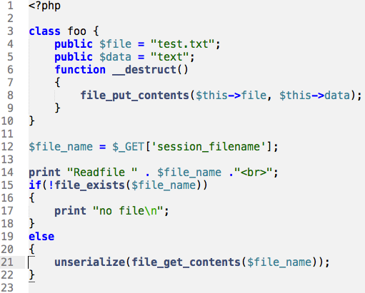

WEB DESIGN-PHP-MySQL
რა არის PHP?
PHP ეს არის მძლავრი საშუალება, რომლის მეშვეობითაც შეგვიძლია ავაგოთ
პრაქტიკულად ნებისმიერი სირთულის ვებ გვერდი.
PHP(Personal Home Page) (ჰიპერტექსტური პრეპროცესორი) წარმოადგენს სერვერული
სკრიფტინგის ენას, რაც ნიშნავს, რომ PHP-
ზე დაწერილი კოდს ვერ აღიქვავს ბრაუზერი
თუ ვებ გვერდის შესაბამის ჰოსტინგს არ ექნება სერვერული მხარდაჭერა.

დღეს-დღეობით ფაქტიურად ჰოსტინგების უმეტესობას 90%-ს და მეტს აქვს სერვერული
მხარდაჭერა, რომელიც უზრუნველყოფს
PHP კოდის წაკითხვას.
იმისათვის რომ გამოვიყენოთ PHP-ის სრული შესაძლებლობები აუცილებელია გვქონდეს
რომელიმე მონაცემთა ბაზა, ზოგადად
PHP უზრუნველყოფს მრავალ მონაცემთა
ბაზასთან კავშირს. რომლებიდანაც დღეს-დღეობით ყველაზე გავრცელებულია MySQL
მონაცემთა ბაზა.
გადასვლა უკან
copyright © 2020 Site Created By:Giorgi Barnabishvili